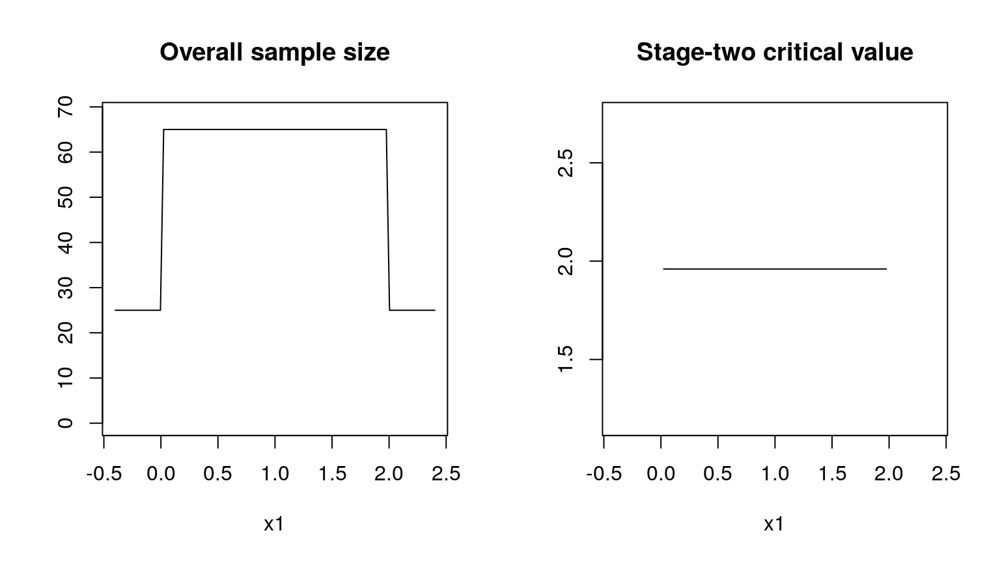
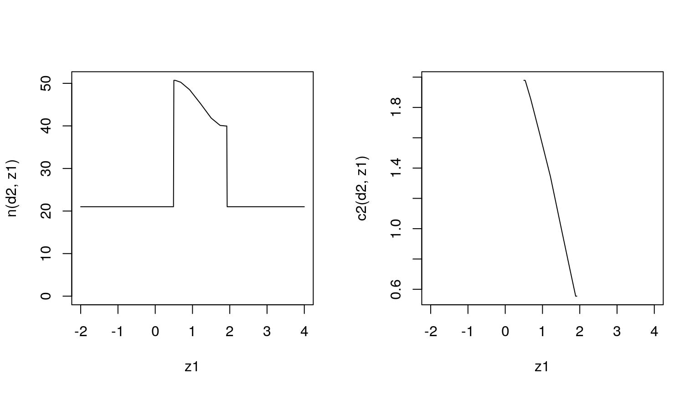

Create some more or less random start design.
order <- 7
design <- GQDesign(
n1 = 25,
c1f = 0,
c1e = 2,
n2_pivots = rep(40.0, order),
c2_pivots = rep( 1.96, order),
order = order)
#TODO we need nice output for out designs...z1 <- seq(-2, 4, .01)
par(mfrow = c(1, 2))
plot(z1, n(design, z1), 'l', ylim = c(0, max(n(design, z1))))
plot(z1, c2(design, z1), 'l')
# define null and alternative as point mass distributions
null <- PointMassPrior(.0, 1)
alternative <- PointMassPrior(.4, 1)
dist <- Normal()# data distributioness <- integrate(ConditionalSampleSize(dist, alternative))
cp <- ConditionalPower(dist, alternative)
pow <- integrate(cp)
toer <- integrate(ConditionalPower(dist, null))
smth <- Smoothness_n2()
# print TODO: need nice functionality like summary(design, ess, pow, toer)
do.call(sprintf, c(
list("ESS: %.1f, power: %.3f, maximal type one error rate: %.3f"),
lapply(list(ess, pow, toer), function(s) evaluate(s, design))
))
#> [1] "ESS: 44.1, power: 0.841, maximal type one error rate: 0.034"minimize(
ess + 0.001*smth,
subject_to(
pow >= 0.8,
toer <= .05
),
initial_design = design,
lower_boundary_design = update(design, c(10, -1, 1, numeric(order) + 2, numeric(order) - 5)),
upper_boundary_design = update(design, c(50, 1, 4, numeric(order) + 50, numeric(order) + 5))
) ->
optimal_design
par(mfrow = c(1, 2))
plot(z1, n(optimal_design, z1), 'l', ylim = c(0, max(n(optimal_design, z1))))
plot(z1, c2(optimal_design, z1), 'l')
Compute the scores using fast internal representation (Gauss quadrature).
do.call(sprintf, c(
list("ESS: %.1f, power: %.3f, maximal type one error rate: %.3f"),
lapply(list(ess, pow, toer), function(s) evaluate(s, optimal_design, specific = TRUE))
))
#> [1] "ESS: 31.3, power: 0.800, maximal type one error rate: 0.050"Compute the scores using adaptive quadrature rules (increased precision but slow).